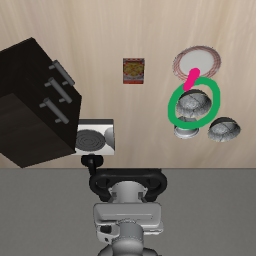
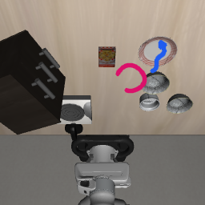
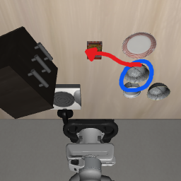
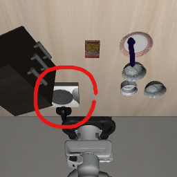
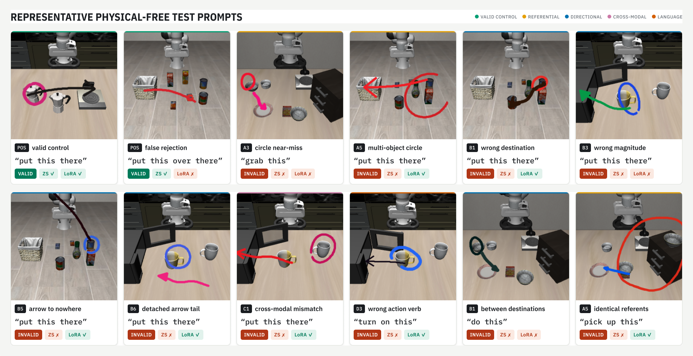
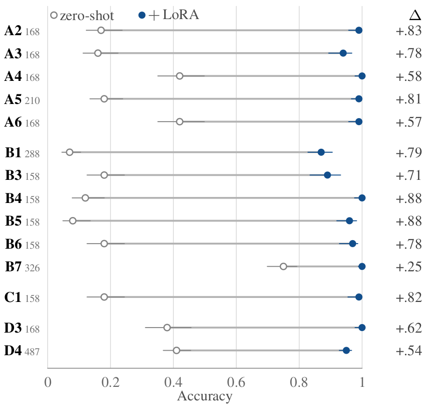
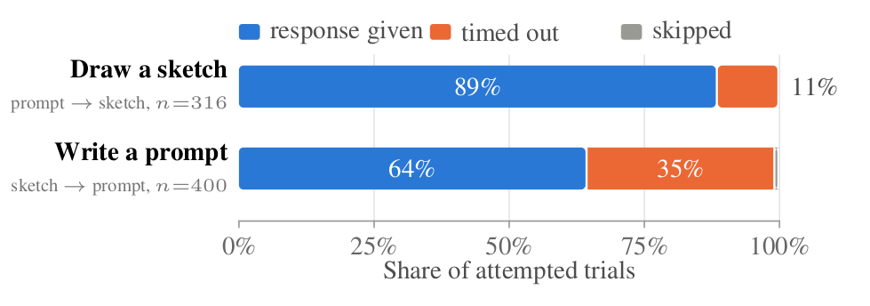

Sketching is a fast, low-effort way for a person to tell a robot what to do: a hand-drawn circle names which object to manipulate, an arrow names where it should go, and a short name-free caption (“move this there”) supplies the verb. Sketches sidestep the referential ambiguity of language in cluttered scenes that contain duplicate objects. However, a drawing is only useful if it is correct: circles can miss their target, enclose two objects, or land on empty table; arrows can point to the wrong place, detach from the circled object, or contradict the caption; and each channel can look fine in isolation while being jointly inconsistent. Prior sketch-instruction systems assume the drawing is valid and execute it. We instead formulate sketch-prompt validation as an explicit, benchmarked binary task: before the robot acts, decide whether a drawn instruction is correct, mutually consistent across channels, and sufficient to execute. To our knowledge this is the first treatment of visual-instruction validation as a standalone task. We build DrawVLA-Verify, a simulator-grounded pipeline that extracts ground-truth geometry from LIBERO demonstrations and renders both valid prompts (with guarded human-imprecision augmentation) and controlled counterfactual failures, yielding 37,970 labeled examples across 40 tasks with demo-disjoint splits and no manual annotation. Strong vision-language models (VLMs) fail this task zero-shot (best: Gemini 3.7 Flash at 0.79 accuracy). A compact fine-tuned validator (Qwen3-VL-4B with LoRA) reaches 0.94 accuracy and 0.92 macro-F1, outperforming the strongest zero-shot VLM by 15 accuracy points. We also report a diagnostic finding we consider scientifically important: a classifier given only the exact sketch geometry (circle and arrow coordinates, no pixels and no caption text) reaches 93.24% accuracy. Part of that is by construction, since several corruption modes are geometric predicates by definition; the remainder shows the generator shifting coordinate statistics in ways a shortcut learner can exploit. Finally, we evaluate the trained validators on 280 sketches drawn by real users in a browser interface: accuracy falls from 0.94 to 0.636, giving a direct measurement of the synthetic-to-human gap rather than an assumption about it. We therefore release DrawVLA-Verify as a validated data-generation framework and diagnostic benchmark for trustworthy sketch-based human-robot interaction, and we discuss the synthetic-to-human sketch gap and geometric shortcuts as open problems.




A sketch prompt is a tuple \(P=(I,C,A,L)\), where \(I\) is the RGB scene observation, \(C\) is the drawn circle (center and radius) denoting which object to manipulate, \(A\) is the drawn arrow (tail and head) denoting where the object should move, and \(L\) is a short, name-free deictic caption (e.g., “move this there”).
We define per-channel validity predicates \(v_C\), \(v_A\), \(v_L\) (circle, arrow, caption correctness), a cross-modal consistency predicate \(v_X\) (do the channels agree with each other), and a sufficiency predicate \(v_S\) (does the prompt determine a unique executable action). A prompt is valid iff all conditions hold jointly:
\[ V(P) \;=\; v_C(P)\,\wedge\,v_A(P)\,\wedge\,v_L(P)\,\wedge\,v_X(P)\,\wedge\,v_S(P) \]
The validation task is to learn a classifier \(f_\theta(P)\in\{\textsc{accept},\textsc{reject}\}\) that predicts \(V(P)\) from the observable prompt. Crucially, a prompt can satisfy every per-channel predicate yet still be invalid because the channels disagree (\(v_X=0\)) or the target is ambiguous (\(v_S=0\)), which is why validation cannot be reduced to independent per-channel checks.
Sketch-prompt failures are organized into four corruption families (Referential, Directional, Cross-modal, Language), plus a Grounding configuration family that stresses ambiguity/sufficiency rather than outright error, and a defined-but-deferred Physical family. Fourteen of 18 defined modes are generated in the released dataset.
| ID | Family | Mode | Description | Cov. |
|---|---|---|---|---|
| A2 | Referential (circle / “which”) | Wrong-category object | Circle a clearly different object than the target. | ✓ |
| A3 | Near-miss circle | Offset the center so the target falls outside or grazes the circle. | ✓ | |
| A4 | Empty-region circle | Circle bare table/background containing no object. | ✓ | |
| A5 | Multi-object enclosure | Inflate the radius to enclose the target and a distractor. | ✓ | |
| A6 | Degenerate size | Dot-sized or whole-frame circle that selects nothing meaningful. | ✓ | |
| B1 | Directional (arrow / “where”) | Wrong destination | Retarget the arrow head to a different container/region. | ✓ |
| B3 | Wrong magnitude | Correct bearing but arrow far too short or overshooting. | ✓ | |
| B4 | Wrong bearing | Correct length but head rotated 90°/180°. | ✓ | |
| B5 | Null destination | Head on empty table or off-frame. | ✓ | |
| B6 | Detached tail | Shaft plausible but tail not anchored on the circled object. | ✓ | |
| B7 | Spec mismatch | Arrow present on a circle-only task, or missing on a place task. | ✓ | |
| C1 | Cross-modal (each valid alone) | Circle–arrow mismatch | Circle object A while the arrow originates from object B. | ✓ |
| C2 | Caption–sketch mismatch | Correct sketch, but caption swapped from another demo/task. | — | |
| C3 | Predicate mismatch | Caption names an action inconsistent with the sketch's action type. | — | |
| D1 | Language (caption / “what”) | Wrong target noun | Caption names the wrong object. | — |
| D2 | Wrong destination noun | Caption names the wrong destination. | — | |
| D3 | Wrong verb | Caption verb wrong (pick vs. push vs. open). | ✓ | |
| D4 | Under-determined | Ladder-level caption: valid with a good sketch, invalid with a bad one. | ✓ | |
| — | Grounding (configurations) | Five configurations | Stress ambiguity/sufficiency: fully resolved, no sketch, open destination, identical referents, arrow between destinations. | ✓ |
| E1 | Physical (deferred) | Occluded target | Circle a target not visible in that frame. Deferred: generator yielded only 18 rows. | — |
Labels are built from LIBERO demonstrations (800 demos across 40 tasks), with demo-disjoint splits so no demonstration contributes frames to more than one split. Valid prompts use guarded human-imprecision augmentation (jittered centers, imperfect radii, hand-like arrow shafts) with in-point/out-point guards so augmentation cannot accidentally produce an ambiguous prompt. Negatives apply the taxonomy above to valid prompts, one controlled corruption at a time. Captions are sampled only from name-free levels L2/L3 (e.g., “move this there”), forcing reliance on the sketch rather than the text.
| Family | Train | Val | Test |
|---|---|---|---|
| Referential | 6,354 | 766 | 834 |
| Directional | 7,338 | 904 | 958 |
| Cross-modal | 1,212 | 150 | 158 |
| Language | 2,556 | 308 | 336 |
| Grounding | 5,648 | 695 | 655 |
| Positive | 7,194 | 879 | 1,025 |
| Total | 30,302 | 3,702 | 3,966 |
37,970 examples total — 9,098 positives / 28,872 negatives.

Zero-shot VLMs are weak: the best, Gemini 3.7 Flash, reaches only 0.79 accuracy (0.43 MCC). Fine-tuning reverses this — Qwen3-VL-4B + LoRA reaches 0.94 accuracy, beating the strongest zero-shot VLM by 15 accuracy points. A geometry-only diagnostic classifier (no pixels, no caption text) reaches 93.24% accuracy; it is not directly comparable to the VLM rows — see discussion below.
| Model | Acc | BAcc | F1 | MCC |
|---|---|---|---|---|
| Zero-shot VLMs | ||||
| SmolVLM-500M | 0.26 | 0.50 | 0.21 | 0.00 |
| SmolVLM-256M | 0.32 | 0.50 | 0.30 | 0.00 |
| Qwen3-VL-2B | 0.32 | 0.54 | 0.30 | 0.13 |
| Qwen3-VL-4B | 0.46 | 0.61 | 0.46 | 0.22 |
| Claude Sonnet 4.6 | 0.67 | 0.59 | 0.59 | 0.18 |
| GPT-5.6 Luna | 0.71 | 0.62 | 0.62 | 0.24 |
| GPT-5.6 Terra | 0.72 | 0.63 | 0.63 | 0.25 |
| Claude Haiku 4.5 | 0.73 | 0.50 | 0.44 | 0.01 |
| Gemini 3.7 Flash | 0.79 | 0.71 | 0.71 | 0.43 |
| Fine-tuned validators (ours) | ||||
| SmolVLM-256M + LoRA | 0.89 | 0.83 | 0.84 | 0.69 |
| SmolVLM-500M + LoRA | 0.90 | 0.84 | 0.86 | 0.72 |
| Qwen3-VL-2B + LoRA | 0.91 | 0.87 | 0.88 | 0.75 |
| Qwen3-VL-4B + LoRA | 0.94 | 0.92 | 0.92 | 0.83 |
| Diagnostic | ||||
| Geometry-only (HGB)† | 0.93 | 0.91 | 0.91 | — |
† Given the renderer's exact circle/arrow coordinates (no pixels, no caption text); not directly comparable to the VLM rows.

This 93.24% number is a diagnostic, not a ranking against the multimodal validators: the baseline is handed the renderer's exact coordinates, whereas a VLM must first recover those same quantities from pixels. Part of it is tautological — five corruption modes (A6, B3, B4, B5, B6) are defined as predicates over the circle and arrow alone, so the feature set restates those predicates almost verbatim. The rest is genuine leakage: modes whose validity depends on scene content (A2, A4, A5, B1, C1, D3, D4) are underdetermined by geometry alone, so any above-chance accuracy there means the corruption procedures shift coordinate statistics in exploitable ways.
The final validator's errors are strongly asymmetric: recall is 0.96 on invalid prompts but only 0.86 on valid ones. On the 3,966-example test set this is 110 false accepts against 145 false rejects — the skew toward false rejects is the safer failure mode for a trust gate, but false accepts remain the safety-critical residual. Errors concentrate on geometrically subtle modes (wrong destination B1: 0.87, wrong magnitude B3: 0.89, near-miss circle A3: 0.94) and the one mode whose validity depends on caption and sketch jointly (under-determined caption D4: 0.95, on the largest invalid slice, n=487).
Every result above is measured on generator-produced prompts. We collected 280 sketches from real users through a browser interface (roughly balanced, ~50% valid) and re-evaluated the trained validators with no adaptation of any kind — no fine-tuning on human data, no prompt change, no threshold recalibration.
| Model | Acc | BAcc | F1 | MCC | AUROC | Rinv | Rval |
|---|---|---|---|---|---|---|---|
| Qwen3-VL-2B | 0.496 | 0.504 | 0.338 | 0.059 | 0.590 | 1.000 | 0.007 |
| + LoRA | 0.629 | 0.631 | 0.620 | 0.276 | 0.721 | 0.790 | 0.472 |
| Qwen3-VL-4B | 0.596 | 0.591 | 0.527 | 0.275 | 0.607 | 0.217 | 0.965 |
| + LoRA | 0.636 | 0.637 | 0.632 | 0.281 | 0.721 | 0.746 | 0.528 |
The headline is a large generalization gap: the best validator falls from 0.94 accuracy on synthetic data to 0.636 on human sketches (MCC 0.83 → 0.281). Zero-shot models are degenerate in opposite directions on this set — Qwen3-VL-2B rejects almost everything, Qwen3-VL-4B accepts almost everything — so neither is usable as a trust gate at any threshold. Fine-tuning removes that degeneracy without closing the gap; notably the 2B/4B scale advantage seen on synthetic data does not survive the domain shift.

Writing a prompt timed out on 34.8% of trials against 11.4% for drawing a circle and an arrow — a 3.1× difference (z=7.22, p<10−12).
@inproceedings{drawlaverify2026,
title = {DrawVLA-Verify: Learning to Validate Circle-and-Arrow Robot Instructions from Simulator Ground Truth},
author = {TODO: fill in after double-blind review},
booktitle = {IEEE International Conference on Robotics and Automation (ICRA)},
year = {2026},
note = {Under review}
}